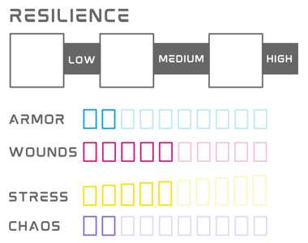

Resiliência
Resiliência representa um conjunto de características que determinam sua fortitude física, mental e capacidade de uso de habilidades.

Limites de Dano
Limites de Dano são valores numéricos associados a Leve, Alto e Severo. Quando você recebe dano, você deve comparar o valor com seus limites de dano e então marcar o número de AP/Feridas correspondente.
- Dano abaixo de Leve: você não recebe dano.
- Dano Leve: marque 1 AP/Ferida.
- Dano Alto: marque 2 AP/Feridas.
- Dano Severo: marque 3 AP/Feridas.
Armadura (AP)
Armadura (AP) aparece quando você tem armadura, seja ela um equipamento ou natural. Seu tipo de armadura determina a quantidade de AP que você tem. Quando você recebe dano, caso tenha AP, você irá marcar de 1 a 3 AP, representando o quanto sua armadura foi danificada.
Você pode recuperar Armadura a partir de diversas fontes, como: Descanso, itens, habilidades, etc.
Quando você marcar seu último AP, narrativamente, sua armadura está inativa. Mecanicamente, nada acontece, a não ser que dito o contrário.
Feridas
Feridas representam lesões físicas e ferimentos experienciados por um personagem durante a aventura. A quantidade de pontos de Ferida variam entre as espécies e suas peculiariedades. Quando você recebe dano, você irá marcar de 1 a 3 Feridas, representando o quanto de vida você perdeu. Caso você tenha AP, o dano é primeiramente diminuído de lá, a não ser que a fonte de dano diga o contrário.
Você pode recuperar Feridas a partir de diversas fontes, como: Descanso, itens, habilidades, etc.
Quando você marcar sua última Ferida, você deve rolar um dado e comparar com a tabela de Ferimentos Críticos, para saber o que acontece com seu personagem. O dado e a tabela variam entre espécies.
Stress
Stress representa seu estado mental, o quão estressado, desgastado você está mentalmente. Ao longo da aventura, você pode receber danos que podem ir direto para seu stress. Algumas situações também podem lhe desgastar, deixando-o com stress - como uma falha em um momento crítico do jogo. Quando você recebe dano em Stress, esse dano é causado diretamente no marcador, sem se beneficiar da mecânica de Limites de Dano ou AP.
Você pode receber Stress quando:
- Alguma Ação/Reação de uma criatura contra você, armadilha, dispositivo ou qualquer outro tipo de perigo, diga explicitamente que causa dano em Stress.
- Você realiza alguma Ação/Reação que explicitamente diga que você recebe Stress.
- O GM indica que você deve receber Stress como consequência de qualquer ato ou efeito externo.
Você pode recuperar Stress a partir de diversas fontes, como: Descanso, itens, habilidades, etc.
Quando você marca um Stress a mais que metade do seu total, você deve rolar um 1d6, somar seu nível de Stress, e comparar o resultado com a tabela de Pânico para saber o que acontece com seu personagem. O dado e a tabela variam entre espécies.
Apenas PCs têm Stress, o Stress de NPCs está ligado diretamente às suas Feridas.
Caos
Caos é a energia que rege o universo. A quantidade informada em seu personagem representa a sua capacidade de realizar atos extraordinários. Mecanicamente, é o recurso utilizado para alimentar suas Habilidades.